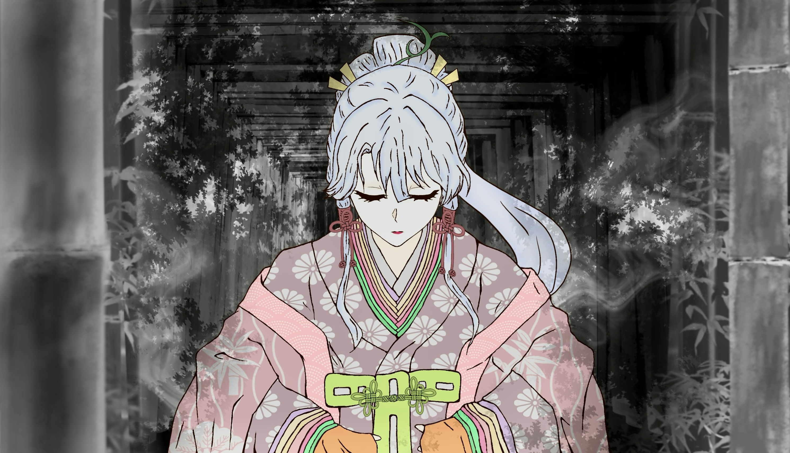
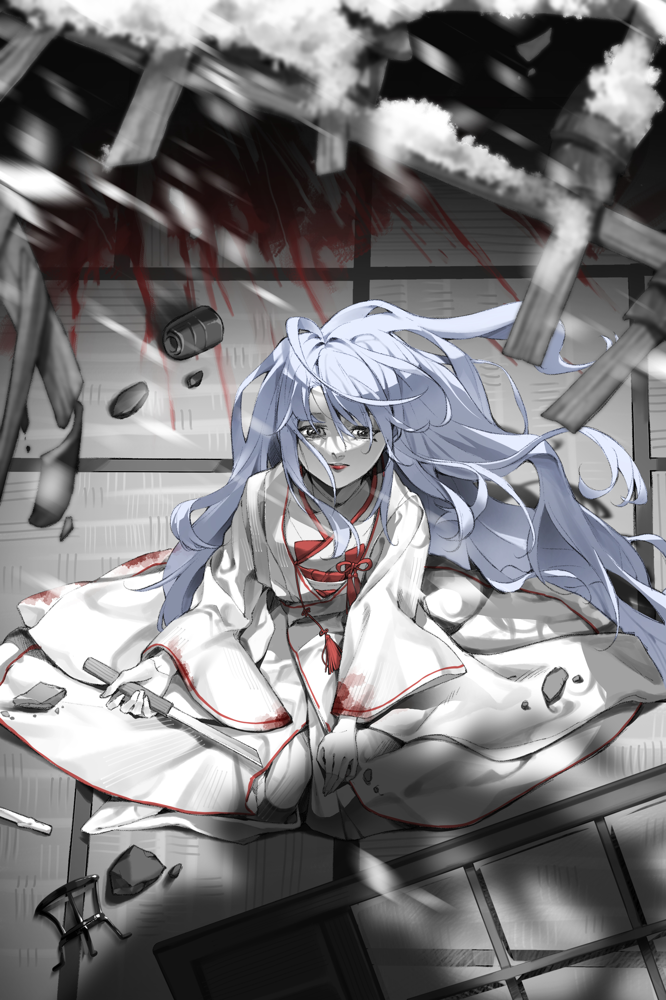
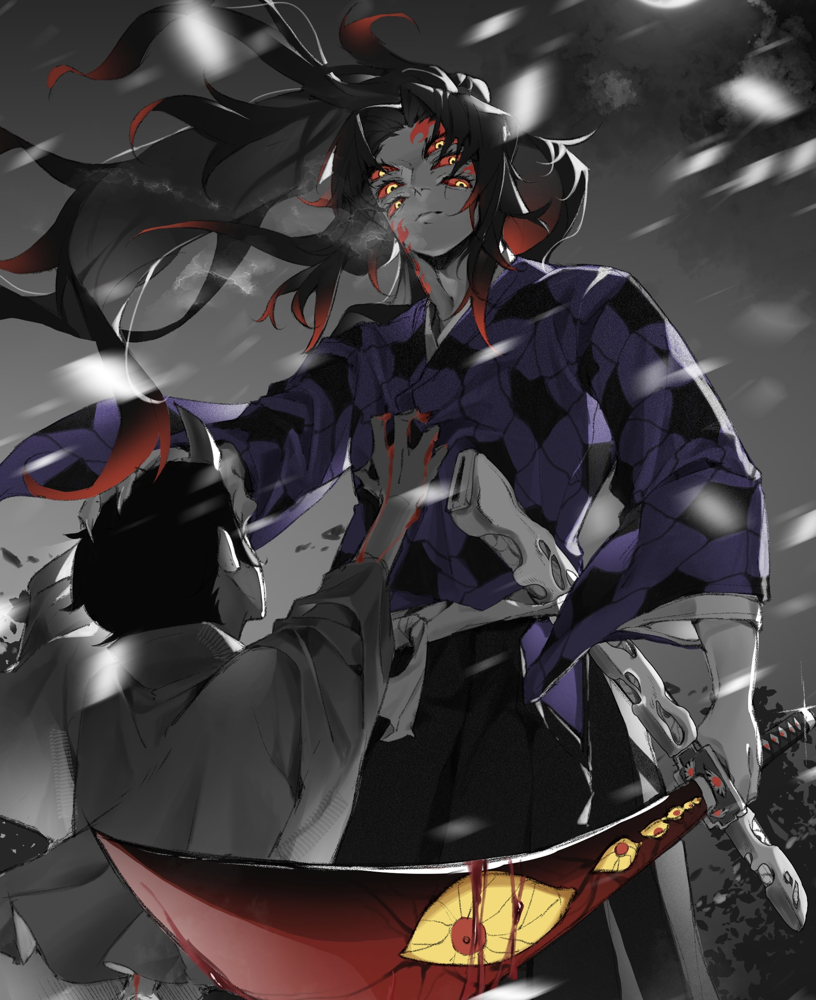

竹林の聲
《竹林初鳴の子》（竹林第一次替她發聲）
竹林永遠帶著潮意。
風從深處吹來時，樹影像一口口幽暗的井，把光吞進去，只剩細碎的綠痕搖晃。
篠宮澪就是在這樣的地方出生。
神社建在竹林最深處，木柱老舊，常年潮濕，苔痕深得像時間刻下來的指紋。
村人說，那裡供奉的不是慈悲的神，而是古老又冷淡的「守林之神」。
可澪一出生，哭聲卻清亮得像敲響了整座山的鈴。
她的母親在她三歲時便離世，留下的只有神職的規矩與一本泛黃的舞本。
父親沉默寡言，眼神永遠躲在陰影裡，看著她的方式更像是在看祭壇上某件被預定好的供品。
澪記事起便知道：
這座神社要求她活著，也要求她獻出自己。
五歲那年，她第一次穿上十二單。
太長的袖口拖在竹毬上，她走兩步就摔倒，抬頭時，竹葉從天上灑下來，像一場輕軟的雨。
她當時不懂什麼祭祀，只懂那片竹林比任何人更溫柔。
神社的舞台是石砌的，就像冰。
澪從小便在那裡跳舞，從何時開始，她的舞步比村裡所有巫女都準，都靈。
她跳舞時，鈴聲會沿著竹林的風傳開，連野獸都會停下腳步。
村裡老人會長嘆一句：
「那孩子天生屬於神。」
可澪從不相信。
她跳舞時眼睛亮得不像神官，而像想奔向世界的野獸。
她看著外面、看著竹林以外的河、山、雲、城，都比看神社的神龕還熱切。
她不害怕神。
她害怕永遠困在這裡。
十歲那年冬天，竹林落雪。
澪赤著腳在雪地練舞，腳底被凍得發紫，卻仍堅持把每一個步伐踩準。
父親沉沉看著她，像在確認某種命運的重量。
當她跳到最後一拍時，風突然停了。
竹林靜得像凍結。
「澪。」
父親第一次用近乎柔和的聲音喊她。
「妳跳得很好。」
澪愣住了。
她從來沒有被稱讚過。
也在那一天，她第一次感覺——
她可能被需要。
但父親的眼神在落雪中逐漸變硬，像一扇門緩緩關上。
那不是父親的慈愛，
是祭司看著供品的確定。
澪十三歲後，神社開始頻繁舉行祈福、驅厄的儀式，她總在最前方跪下，接受所有視線。
村裡人尊敬她、畏懼她、依賴她。
只有她自己知道：
她沒有選擇。
竹林外的世界像一幅巨大的畫，她每次偷看都心癢得發痛。
她也偷偷在夜裡練著不是巫女該有的步法——
快速的步伐、敏捷的轉身、像獵獸才會用的身體反應。
那是她唯一的自由。
十八歲前一個月，父親突然對她說：
「等冬祭過後，妳就成年了。」
澪點頭，以為那意味著能離開神社。
父親摸了摸她的頭，指尖冰冷。
那一刻澪沒有察覺，那不是祝福——
而是確認。
竹林的雪越下越大，像替某件將要發生的事蓋上一層白布。
澪跳著舞、祈著福、履行著巫女本分。
可她的眼睛始終望向竹林深處之外，
像在等一陣風——
或某個命運的到來。
誰都不知道，那晚之後，
她的人生會被一個踏著月光而來的男人徹底撕開。

《鈴の舞、白の祈り》（鈴聲之舞、白衣之祈）
竹林神社裡，供奉的是沒有名字的神。
也因為沒有名字，祂的舞——也就是巫女代代相傳的祭祀舞——沒有記錄、沒有故事、沒有由來。
唯有一本泛黃的舞本，被布裹著、放在供桌最深處。
澪第一次接觸那本舞本，是六歲那年。
父親將布揭開時，灰塵像細雪飄落。
舞本薄得不像能存活百年，紙邊捲曲，筆跡模糊，像被水泡過，又像被人握得太久。
文字不多，都是簡筆的符號與舞者身形的線條——
彎腰、旋身、踏步、挽袖——
卻沒有一句解釋。
「這是妳母親留下的。」父親說。
澪愣住。
她從來沒看過母親的樣子，只知道她在澪三歲時病逝。
神社裡沒有人提起她，也沒有任何遺物。
那本舞本，是唯一一件屬於母親的東西。
她伸手觸碰紙面時，那些線條卻像活了起來。
不是動，而是——
它們在呼吸。
她指尖一經貼上，就彷彿能感覺舞者留在紙上的溫度。
溫柔、堅定、像風，也像雪。
那天開始，澪的舞蹈就不是「學」來的。
而是像——
身體自己記得。
跳舞的練習不在白天，而在夜裡。
竹林的風總在深夜最清晰，吹進舞台，帶著冷露與泥土的味道。
澪赤著腳站在石舞台上，腳底像踩在冰面上。
她先舉手。
袖口太長，落下來時輕輕碰到她的臉。
她不會整理，只是任它遮住眼睛。
像是母親在替她暖著額頭。
舞本上的第一條線，是斜斬而下的弧。
不是刀，是袖。
澪將袖舉高，向月光落下的方向緩緩畫出那道弧線。
風從她的掌心滑過。
第二式是踏地。
書上沒有寫幾拍，但澪一踏——
竹林回應，葉片簌簌作響。
她像被這片森林牽著走。
腳步輕、快、穩，像天生就知道節奏。
第三式是旋身。
那天她第一次旋得太快，直接摔倒在石台上。
額頭撞到地面，瞬間一陣發白。
她以為自己會哭。
但下一秒，竹林裡傳來一串輕風。
像笑。
像母親的手撫過髮梢。
澪擦掉額上的血，重新站起來。
袖在夜裡揚起，白衣在月光下閃亮，像竹林深處綻出的光。
她不是在模仿誰。
她是在「回憶」——
一個她不曾見過的母親，
一個她從未感受過卻本能想追隨的姿態。
村人總說她天賦極高。
她跳舞時，那些符號像被照亮，紙上母親的線條會在她體內流動，
讓她踏出的每一步、呼吸的每一下都像「天生」。
但是只有澪自己知道——
她跳舞時不是在侍奉神。
她是在尋找母親。
尋找那個在她只有三歲時便離開的女人，
尋找舞本裡剩下的溫度，
尋找一個從未擁有過的擁抱。
澪越長大，舞越精準，越優雅，越接近「神職巫女」的形象。
但她的眼神——
始終不像神官。
那是一雙在跳舞時會透著光、
卻永遠望向竹林外的眼睛。
她跳得越美，
她離神就越遠。
她離「自己想要的世界」越近。
她不屬於神社。
她只是被留在這裡。
被舞本抓著、被命運抓著、
被一條她從未選擇過的道路抓著。
直到十八歲的那個冬天，
她仍不知道——
她的舞，
她的命運，
她的整個生命曲線——
都將因為一個踏過竹林、沾著月光而來的男人
完全改寫。
《白無垢は捧げ物》（白無垢不是祝福，而是祭品）
竹林的雪是靜的。
靜到能把人心裡所有聲音都吞掉，那天晚上，篠宮澪就是在這種窒息般的寂冷中，被父親喚醒。
「澪，起來。」
聲音低沉、硬冷，沒有一絲父親該有的溫度。
澪揉了揉眼睛，本以為是冬祭的準備——
然而父親遞到她面前的不是十二單。
而是一襲沉重的白無垢。
她愣住了。
「……這不是冬祭的衣服。」
她小聲提醒。
父親沒有回應，只一句話也不說地替她穿上。
腰緊得像要勒斷呼吸，袖口垂得快碰到地面。
白色在昏暗燈光下泛著一種病態的亮。
「父親…為什麼是這件？」
父親的手微微停頓，但只是片刻。
下一秒，他扣緊了最後一條繫帶。
「澪，今晚妳成年。」
聲音像石頭落下。
「也是妳該為神社報恩的時候。」
澪的心一瞬間冷到刺骨。
報恩？
父親背對著她，像在逃避她的視線。
他深吸一口氣，語氣像提前排練過千遍：
「城主大人今晚會來神社後殿。 妳……是奉給他的。」
澪的指尖瞬間冰透。
她以為自己聽錯。
「……奉給？」
她像剛學講話的孩子一樣重複。
父親終於轉過頭。
那眼神不再是父親的眼神，而是祭司看著供物。
「神社欠城主太多。 妳，是最合適的還願。」
還願。
她忽然明白母親為什麼一直沉默、為什麼在她三歲那年就病死。
她的人生從來不屬於自己。
「不。」
澪的聲音顫得幾乎發不出來。
「我不是供品……父親……我不是……」
「安靜。」
父親第一次用那麼大的力氣抓住她的手腕，
指節掐得她整條手臂發麻。
「妳是巫女。
巫女的身體、本該獻給神。
但神不收，城主收。
這是神社的命運，也是妳的命運。」
她的呼吸瞬間變得斷裂。
白無垢的重量壓在她的肩上，像要把她整個人埋到地底。
她想逃、想喊、想把衣服撕碎。
可是父親拉住她，像拉住一件會逃跑的祭禮。
「澪。」
他低聲說。
「別讓神社丟臉。」
這句話比雪還冷，比刀還利。
把她推進一個沒有出口的房間。
神社後殿點著昏黃的燈，
火光映在雪地上像一條被命運畫出的路，引著她一步一步走向深處。
婦人替她挽髮、抹粉、扣上髮簪。
每一個動作都像在把她封印。
「澪大人，請進。」
門推開的瞬間，澪覺得整個世界都在遠離她。
室內暖得過分，有濃烈的酒香。
屏風後傳來沉重的呼吸聲。
她跪下。
雙手放在膝前。
袖在地面展開——像盛開的白花，又像葬禮的布。
足音靠近。
一個肥胖的男人從屏風後走出來，
眼神從頭到腳掃過她，
像在確認牲禮是否合格。
澪的胃狂抽，她整個人僵住。
白無垢下藏著那把母親留下的小刀——
唯一的反抗，也可能是她最後的選擇。
指尖在袖下顫抖。
“如果他靠近，我就刺下去。”
但她也知道。
刺下去之後呢？
她能跑得了嗎？
跑得過城主、父親、神社、整片竹林？
她被困住了。
她低著頭，嘴唇咬得發白。
耳邊只有男人沉重的呼吸聲越來越近、越來越近。
她知道——
她的命運正在被推向深淵。
她不知道的是：
下一秒來的不是絕望，
而是——
會徹底撕開她命運的「月光」。
《灯の消えた座敷》（燈火熄滅的房間）
城主的房屋坐落在竹林邊緣，是一座修葺精美、佔地寬大的宅邸。
夜裡燈火通明，紙門後透出紅色的光，像吞人不吐骨頭的獸腹。
澪被押進去時，雪正落在屋檐上，落成一片片靜默的死亡。
她的心跳得太快，快到耳朵裡只剩風聲。
白無垢重得像塊石碑，她的每一步都像腳底被釘住。
男人的笑聲、酒氣、談話聲混在一起，像從地底滲出的腐臭。
屏風後傳來沉重的呼吸聲——
城主正在等她。
澪跪下，手藏在袖下，指尖死死抓著藏起來的小刀。
男人開口，聲音黏膩又自滿：
「巫女大人終於來了？」
澪的胃縮成一團。
她不敢抬頭，眼睛盯著地板，喉嚨像被雪堵住。
城主的腳步沉重，越走越近。
紙門外的火光照著他肥大的影子，他的影子覆過澪整個人，像把她吞進去。
澪閉上眼，手指緊緊扣住刀柄。
她不是巫女。
不是獻祭品。
不是神社的恩物。
不是用來還債的物件。
她是人。
——她想反抗。
胸口的呼吸顫得快斷掉，心裡一個聲音不停喊：
刺下去。
刺下去。
刺下去——
城主蹲下，伸手想掀起她的下巴。
澪手腕一抖，刀已經在袖中滑到掌心。
再兩秒，她就會刺。
再一秒，她就會衝。
就在她準備動的那一瞬——
宅邸整個震了一下。
不是風吹，不是雪崩，是——
整棟房子被什麼「撞擊」。
燈籠搖晃、屏風倒下、地板震動，榻榻米藺草被震得四散。
「什麼——？」
城主尚未反應過來，
第二聲衝擊直接從外牆傳入。
轟！！！
紙門炸裂，木柱斷裂。
強風吹進房內，雪片像刀子般捲入。
燭火瞬間全滅，室內陷入近乎黑暗的混亂。
侍從們驚叫，跌成一團。
有人去看外頭，一抬頭就慘叫——
聲音高得沙啞。
「鬼——鬼、是鬼——！！」
澪的心臟猛地一跳。
她不是害怕鬼——
她是第一次明白，被獻祭的她根本沒有被神保護。
神不在。
神不會救她。
神從未看過她。
她被留在這裡，孤單、無助，只能靠自己。
外頭傳來撕裂肉體的聲音，骨折聲、破碎的屋梁落下聲、慘叫聲——
混在一起，像地獄的嘶吼。
第二間房被砸穿。
宅邸的屋檐開始坍塌。
竹林的影子在破洞間搖晃，雪像塵土落進人間。
澪抬起頭，眼神顫著。
她沒動，卻比剛剛更冷靜。
宅邸正在崩塌。
城主在慘叫。
侍從逃跑。
世界混亂。
而澪——
第一次覺得
命運也許正在被撕開。
她不知道那是救贖，還是更深的深淵。
但她知道——
她的「獻祭之夜」，在這一刻被打斷了。
竹林神社的巫女，第一次看見神不存在。
下一次睜開眼，她會看見她的一生。

《月影を神と見まごう》（月影似神）
宅邸被砸開。
雪與碎裂的木屑整片捲進屋內。
火燭熄滅，世界一瞬間只剩下——
冷、白、死靜。
澪跪在榻榻米中央，
白無垢的角隱在震盪中滑落，
「咚」的一聲掉到她身後。
她銀白髮絲瞬間失去束縛，
整片散開。
月光落在髮上，
從髮冠處的銀白一路沉到髮尾，
像夜空把最柔軟的光全部倒在她身上。
她才剛抬頭——世界裂開。
破碎的門檻上站著那個人。
不屬於人間的高大身影。
長髮被風抬起，像黑夜本身在呼吸。
六隻眼。
像六個不同維度的死寂月亮
同時盯著她。
澪整個靈魂都被撕開了。
她從竹林神社出生到十八歲，
從來沒看過能讓她「忘記怎麼呼吸」的存在。
他身後半殘的鬼還在蠕動。
那鬼似乎意識到什麼，
拼命往後爬、抽搐、顫抖——
像被某種「頂點捕食者」的氣息鎖住。
下一秒。
黑死牟僅僅是抬起手背、
像拂開灰塵一樣輕。
啪。
那隻鬼整個被捏爆成黑灰。
沒有聲音。
沒有痛叫。
就像這世界允許他毀滅任何東西——
不需理由，也不需力氣。
澪的呼吸第一次在這世上
完全不受控。
胸口像被月光壓住。
她嘴唇微張，
舌頭卻像被奪走支配權，
思緒、語言、恐懼全都失效。
那句話不是理智講的。
是——
被撕開命運的瞬間，本能喊出的祈求：
「……神様…？」
黑死牟的眼睛沒有表情。
六隻眼像看穿她的靈魂，
審視她、判定她、記住她。
月光在他的刀鋒上靜止不動，
像連光都不敢在他面前流動。
他低頭看她：
一個被獻祭、
一秒前還是商品、
如今坐在血色殘景中的白無垢新娘。
他冷冷開口——
不像否認，
更像宣告：
「神など——いない。」
（世上根本沒有神。）
澪整個人震住。
下一瞬間—
黑死牟「落下」。
不是走向她。
不是靠近她。
不是攻擊。
而是——
直接站在她前方。
他從破碎的世界上空降下來，
沉靜落地的一刻，
腳尖輕踏，
整個屋內的風向都被他改寫。
他高大身影冷冷擋在她面前，
把殘骸、血污、鬼、城主、混亂——
全隔在他身後。
彷彿在宣告：
她不該跪在這裡。
她不該被獻祭。
她不屬於這些東西。
澪抬起頭，看著他。
她不知道自己是否活著、
是否該逃、
是否該哭。
她只知道——
在他落地那一瞬間，
她的一生被一刀改寫。

《星血さく夜》（星血綻開的夜）
宅邸的煙塵逐漸落下時，
黑死牟的六隻眼早已把整個房間的狀況看得一清二楚。
倒地的城主、逃竄的侍從、破碎的屋梁、濃烈的血腥。
還有——在一片狼藉中央，
銀白色長髮散落在榻榻米上的少女。
澪
白無垢的角隱滾到角落，她的髮絲像被月光點亮，
在破牆灌入的風裡輕微擺動。
那雙還帶著恐懼的眼緩緩抬起，看向他。
黑死牟本該無情。
他殺了這裡所有人，下一步應該是離開。
可是視線落在澪身上時，他停住了。
這不是軟弱。
不是憐憫。
更不是興趣。
是——
她與所有獻祭、所有供品、所有人類不一樣。
澪跪著，袖口仍藏著那把她打算用來殺城主的小刀。
她不是任命的少女。
她在反抗命運。
黑死牟感受到了。
他向她走近一步。
腳下的血被他鞋推開，像是在替她清路。
澪屏住呼吸。
他太近了。
近到她能看清他眼中月光反射的角度、
近到她能聽見他呼吸時空氣細微的波動。
「……君は、巫女だな。」
（妳是巫女吧。）
澪咬住下唇。
她該說「是」。
該說「被獻祭」。
該哭。
可是她什麼都說不出。
她只是抬起手，
給他看袖子裡那把被她握得發白的小刀。
黑死牟垂下眼，視線掃過刀柄。
一秒。
兩秒。
他讀懂了。
她不是來投降的。
不是等待被占有。
她打算殺了城主、殺了命運、殺了自己所有被強加的枷鎖。
黑死牟第一次看這個少女，
看見的不是弱。
是野性。
「……役に立つ。」
（……妳有用。）
澪一愣。
他的聲音沒有溫度，卻像冰刃般精準地給了她第一個「價值」。
不是身體的價值。
是力量的。
是未來的。
是選擇的。
澪低下頭，那一瞬間，她的心裡第一次不是恐懼——
而是「想活下去」。
而黑死牟，
在那個瞬間做了一個他以為很冷酷、很理性的判斷。
他伸出手，掌心覆在她的後頸。
不是安慰。
是決定。
他要讓她成為鬼。
澪的呼吸在那一刻全部停住。
她沒有後退。
甚至沒有抵抗。
她抬眼看著他，銀白髮被風吹得貼在臉側，
少見地輕聲問：
「……死にたくない。」
（……我不想死。）
黑死牟的六隻眼同時微微收縮。
這是第一次——
有一個人，在他面前坦白地說出「想活」。
他不回答。
只把她抱起，從破口踏入夜雪。
外面死寂一片。
竹林的風帶著霜，用刀刃般切過兩人的影子。
黑死牟在雪地上跪下，像在處理一件重要武器。
他用指尖在她頸側劃開一道極細的傷口。
澪倒抽一口氣。
她的血香得不像人類，
像星光在雪夜升起。
黑死牟看了一眼。
他知道自己沒選錯。
他低下頭——把自己的血滴入她的傷口。
那一刻，
澪感覺世界被拉開，
痛、熱、呼吸、意識全部被捲入黑暗深處。
身體像被火燒，又像被掰開重新組合。
她想尖叫，卻只吐出一聲極細的破音：
「っ……！」
銀白髮在雪地上散開，
像被夜吞下的一縷光。
黑死牟靜靜地看著她。
沒有多餘情緒，
卻把她的手腕輕輕壓住，讓她不會在抽搐時傷到自己。
風停了。
雪落下。
澪的呼吸再度浮上來——
這一次，
是鬼的呼吸。
她睜開眼的瞬間，
那雙瞳裡映著月光。
而黑死牟不知道，
他的命運，就在她睜眼的那一刻，被徹底改寫。